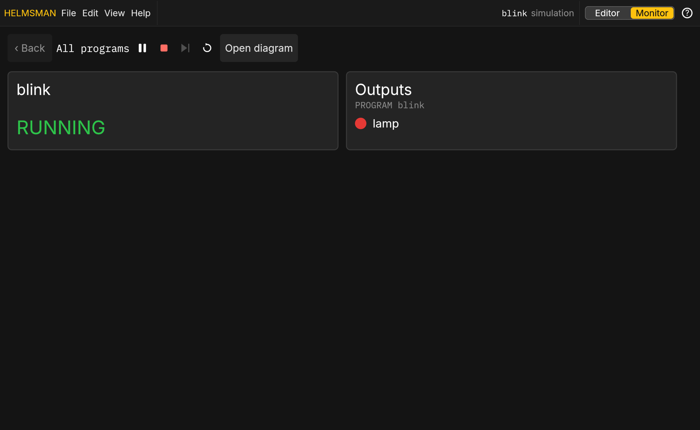

On a box
A box is a controller on the machine's network. It serves this app itself: open its address in a browser and the Editor shows what it is running, with the real inputs and outputs.
Signing in
Anyone on the network can watch. Editing, saving, deploying and forcing need an engineer's sign in: Sign in in the header, or Alt F8; Ctrl F8 signs out. A fresh box with no accounts yet takes a role and its PIN; once an account exists, only accounts sign in. A session ends when you sign out, when it has been idle a while, or when it is a day old. Once you are signed in the panel closes, and the header shows who is signed in with the role's mark: a hard hat for an operator, a wrench and a screwdriver for an engineer.
Deploying
Deploy on a box goes through its approval policy: a change the policy calls small lands at once; a larger one, a logic change, is held as a proposal until an approver signs it off, with a replay in the simulation to look at first. The header's yellow waiting badge counts the proposals waiting and opens the Proposals screen that lists them. Nothing runs on the box that was not approved under the policy, and every change is in the box's audit log.
The first install of a box seeds a project but runs nothing: an engineer deploys the first program.
Forcing
Signed in as an engineer, an input's block on the diagram is a control as in the simulation, but a click forces the input: the box holds the value you set over what the channel reads. A forced input is marked FORCED in the warning colour on its block and in the I/O panel, a banner lists every force with a release for each and for all, and forces end when you sign out or deploy. Forcing is for commissioning and troubleshooting; the audit log records each one.
From the keyboard: pick the input's block and press Ctrl Shift F to force it (a BOOL flips, a number's field opens for the value), and Ctrl Shift U releases every force. Both are in the Edit menu.
The trend
The Trend tab opens with the box's own history of each pinned signal, the last ten minutes, then streams. The window opens on 30 s and widens to the whole ten minutes. Drag a lane's name up or down to change the order of the lanes. Pins and their order are yours while you are signed in and come back on any screen; the box keeps them across a restart (the history starts over).
Lost the box
If the box stops answering, the state in the header says so and the last diagram stays up; the page keeps trying. "Simulate in this browser" offers to run the program in the page instead. A page that never reached a box at its address goes to the simulation by itself and says so.
Your work survives a reload
This browser keeps what you had in front of you: the project and file you had open, every edit you had not saved yet, what you had typed into the Agent and Requirements boxes, whether you were on the Monitor, and the name in the sign-in form (never a password or PIN). Reload the page, or come back after the box restarts, and it is all where you left it; a note says when unsaved edits came back. If someone saved the same file since, saving your edits asks which version to keep instead of overwriting theirs. Edits still need an engineer signed in to be saved.
The Monitor
The Monitor (the Editor | Monitor toggle, or View › Monitor) is the watch-only screen for a phone, a tablet or a wall display: one tile per program with its state and its lamps, green TRUE, red FALSE, and a tap into each block instance. A phone opens on the Monitor. "Open diagram" on a tile goes to that level in the Editor. An engineer can turn on Scan detail (View) to see each program's scan period and counts, how long its scan takes, how late each scan starts (jitter) and its overruns, each with a tooltip on what is normal; they are hidden otherwise. An overrun in the last minute shows in yellow for everyone.
Signed in as an engineer, the Monitor's header also has Stop and Restart for the program on the box: the one shown, or every program from the top level. Stop holds the program: it stops scanning and its outputs go to their safe values, and its tile says STOPPED with who stopped it. The same button then reads Run and starts it again where it left off. Restart starts it again from its initial values. A deploy leaves a stopped program stopped; a box that restarts starts everything. The box records each one in its audit log, and anyone not signed in as an engineer sees neither button. The Editor has the same two buttons over the diagram, for every program the box runs. On a box no key stops a program (Ctrl Enter stays the simulation's), so a stray key never stops a machine.
A deploy keeps every variable's value where its name and type are the
same. A box that restarts (a reboot, a power cut) keeps only the
variables declared in a VAR RETAIN block, such as a part
counter or a recipe step. The box saves them at most once a second when
they change, so a power cut loses at most the last second. A planned
stop (the service manager, Ctrl-C) writes them all first and loses
nothing. At start the box says in its log which values it restored and
which start fresh because their type changed. NON_RETAIN
and plain VAR variables start from their initial values,
and Restart resets RETAIN variables too. RETAIN inside a function block
is not kept yet: the check warns and the program still runs (declare the
instance RETAIN in the program instead). More than 65,536 RETAIN values
in one program is refused.

HTTPS
A box serves HTTPS with a certificate it made at first boot; the browser asks once. The certificate's fingerprint is printed at the box's startup and shown in Help › About, so you can compare the two. From the box's own host, plain HTTP still works for scripts.